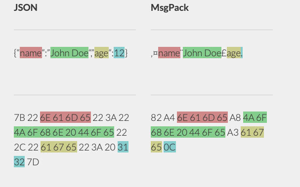

It’s like JSON. but fast and small.
MessagePack是什么
MessagePack是一个高效的二进制序列化格式，它像JSON一样支持不同语言间的数据交互，但是它的性能更快，序列化之后的码流也更小。
比如小的整型会被编码为一个单字节，短字符串也仅仅需要额外的一个字节来编码。
我们可以看下面的例子说明：

实际上MessagePack确实就“像JSON”一样。
性能如何
序列化的性能体现可以分为两方面，一个是编码效率，一个是编码速度。
根据网友的测试数据，编码效率上确实是比JSON要好的，很明显因为MessagePack本身就是在JSON基础上进行字典编码。但经过gzip压缩后，实际差别不大。所以对于能叠加gzip压缩的场景（比如HTTP协议），显然使用MessagePack的必要性也不高。
| Format | Encoded (bytes) | Encoded + Gzipped (bytes) |
|---|---|---|
| JSON | 143025 | 26214 |
| MessagePack | 120799 (-22226) | 26074 (-140) |
而编码速度上，编解码时间相差70%以上，在循环10k次以上时间感知上体现比较明显，但常见情境下比如100次循环的条件下，差异在50ms级别。
| Loops | JSON Encoding (s) | MessagePack Encoding (s) | JSON Decoding (s) | MessagePack Decoding (s) |
|---|---|---|---|---|
| 1 | 0.00064 | 0.00019 (-0,00045) | 0.00164 | 0.00051 (-0,00113) |
| 10 | 0.00340 | 0.00082 (-0,00258) | 0.00866 | 0.00194 (-0,00672) |
| 100 | 0.03135 | 0.00732 (-0,02403) | 0.07905 | 0.01700 (-0,06205) |
| 1000 | 0.30385 | 0.07250 (-0,23135) | 0.77422 | 0.16785 (-0,60637) |
| 10000 | 3.02723 | 0.72503 (-2,95472) | 7.74523 | 1.65804 (-6,08719) |
| 100000 | 30.29353 | 7.25324 (-23,04029) | 77.48423 | 16.71792 (-60,76631) |
因此综上，在HTTP协议下传输的话，切换到MessagePack的必要性不大。但在自定义协议上还是可以尝试使用的，不经过压缩编码，在流量方面比JSON要优化一些，编码效率也高，尤其你是想使用一个相对不那么可读的序列化编码。
对比ProtoBuf
其实根据官网的时间MessagePack应该在2008年就问世了，但到如今应用的范围并不算广泛。而同年Google也正式对外发布ProtoBuf 2.0。在数据二进制编码序列化上，ProtoBuf的使用率更高。在gRPC继续推广的过程中，ProtoBuf可能有更多的应用。
ProtoBuf二进制编码，通过T-(L)-V（TAG-LENGTH-VALUE）方式编码，因为对字段使用编号指代，所以编解码依赖proto文件，编码后数据没有可读性。公开发布时，ProtoBuf规范版本是proto2，目前ProtoBuf规范的版本是proto3。官方文档可见此处。编解码过程的示例也可以参考此文。
ProtoBuf更容易拓展，尽管编解码端需要统一使用proto消息规范文件。同时因为Protobuf IDL统一了语言无关的服务定义，协议部分可以独立，对于多端接口的定义也是一种约束。Google在开发ProtoBuf时首先考虑的也并不只是编解码效率问题。并且消息协议变更时，可以平滑升级，这对于二进制编码的协议而言是非常重要的。
相比而言MessagePack就是比较简单独立的了，既然理解为经过优化的JSON，就没有消息规范文件的约束。
编码规范介绍
MessagePack目前已经支持了常见的的编程语言。如果你要开发新的编解码器，是需要了解序列化编码规范的。
编码规范可以参见MessagePack在github的文档。
序列化过程中会根据首字节（及后续字节）来确定编码格式，比如常见的一些首字节：
| 格式 | 首字节 (in binary) | 首字节 (in hex) |
|---|---|---|
| 正整数（特定） | 0xxxxxxx | 0x00 - 0x7f |
| fixmap | 1000xxxx | 0x80 - 0x8f |
| fixarray | 1001xxxx | 0x90 - 0x9f |
| fixstr | 101xxxxx | 0xa0 - 0xbf |
| nil | 11000000 | 0xc0 |
| (never used) | 11000001 | 0xc1 |
| false | 11000010 | 0xc2 |
| true | 11000011 | 0xc3 |
浮点数编码格式：1
2
3
4
5
6
7
8
9float 32 stores a floating point number in IEEE 754 single precision floating point number format:
+--------+--------+--------+--------+--------+
| 0xca |XXXXXXXX|XXXXXXXX|XXXXXXXX|XXXXXXXX|
+--------+--------+--------+--------+--------+
float 64 stores a floating point number in IEEE 754 double precision floating point number format:
+--------+--------+--------+--------+--------+--------+--------+--------+--------+
| 0xcb |YYYYYYYY|YYYYYYYY|YYYYYYYY|YYYYYYYY|YYYYYYYY|YYYYYYYY|YYYYYYYY|YYYYYYYY|
+--------+--------+--------+--------+--------+--------+--------+--------+--------+
IEEE 754单/双精度格式。
字符串编码格式：1
2
3
4
5
6
7
8
9
10
11
12
13
14
15
16
17
18
19fixstr stores a byte array whose length is upto 31 bytes:
+--------+========+
|101XXXXX| data |
+--------+========+
str 8 stores a byte array whose length is upto (2^8)-1 bytes:
+--------+--------+========+
| 0xd9 |YYYYYYYY| data |
+--------+--------+========+
str 16 stores a byte array whose length is upto (2^16)-1 bytes:
+--------+--------+--------+========+
| 0xda |ZZZZZZZZ|ZZZZZZZZ| data |
+--------+--------+--------+========+
str 32 stores a byte array whose length is upto (2^32)-1 bytes:
+--------+--------+--------+--------+--------+========+
| 0xdb |AAAAAAAA|AAAAAAAA|AAAAAAAA|AAAAAAAA| data |
+--------+--------+--------+--------+--------+========+
其中XXXX或YYYY、ZZZZ都是表征字符串数据data大小N的预留位，大端序。
数组的编码格式：1
2
3
4
5
6
7
8
9
10
11
12
13
14fixarray stores an array whose length is upto 15 elements:
+--------+~~~~~~~~~~~~~~~~~+
|1001XXXX| N objects |
+--------+~~~~~~~~~~~~~~~~~+
array 16 stores an array whose length is upto (2^16)-1 elements:
+--------+--------+--------+~~~~~~~~~~~~~~~~~+
| 0xdc |YYYYYYYY|YYYYYYYY| N objects |
+--------+--------+--------+~~~~~~~~~~~~~~~~~+
array 32 stores an array whose length is upto (2^32)-1 elements:
+--------+--------+--------+--------+--------+~~~~~~~~~~~~~~~~~+
| 0xdd |ZZZZZZZZ|ZZZZZZZZ|ZZZZZZZZ|ZZZZZZZZ| N objects |
+--------+--------+--------+--------+--------+~~~~~~~~~~~~~~~~~+
其中的XXXX或YYYY、ZZZZ都是表征数组大小N的预留位。
Comments